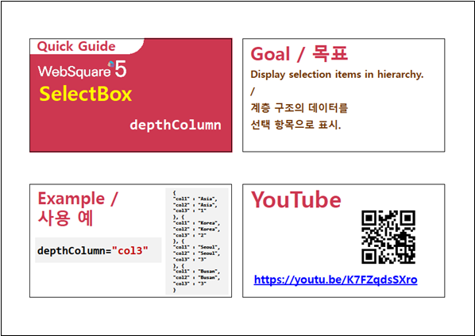

SelectBox컴포넌트의 선택 항목을 표시하는 방법에 관한 예제입니다. 이 기능은 아래의 속성으로 사용할 수 있습니다. - displayMode : 선택 항목의 표현 방법. - delimeter : 선택 항목 목록에 value와 label을 함께 표시할 때 사용하는 구분자.
label 형태로 표시하기
value 형태로 표시하기
label 구분자 value 형태로 표시하기
value 구분자 label 형태로 표시하기
아래 그림과 같이 SelectBox컴포넌트를 클릭합니다.
[브라우저(Chrome) 실행 예시]
SelectBox컴포넌트의 선택 항목이 DataList의 label로 표시되어 있는 것을 확인합니다.
※ SelectBox컴포넌트에 바인딩 된 DataList 의 label과 value는 4.1에서 참고
[브라우저(Chrome) 실행 예시]
아래 그림과 같이 SelectBox컴포넌트를 클릭합니다.
[브라우저(Chrome) 실행 예시]
SelectBox컴포넌트의 선택 항목이 DataList의 value로 표시되어 있는 것을 확인합니다.
※ SelectBox컴포넌트에 바인딩 된 DataList 의 label과 value는 4.1에서 참고
[브라우저(Chrome) 실행 예시]
아래 그림과 같이 SelectBox컴포넌트를 클릭합니다.
[브라우저(Chrome) 실행 예시]
SelectBox컴포넌트의 선택 항목이 DataList의 label과 value가 'label (구분자) value' 형태로 표시되어 있는 것을 확인합니다.
※ SelectBox컴포넌트에 바인딩 된 DataList 의 label과 value는 4.1에서 참고
[브라우저(Chrome) 실행 예시]
아래 그림과 같이 SelectBox컴포넌트를 클릭합니다.
[브라우저(Chrome) 실행 예시]
SelectBox컴포넌트의 선택 항목이 DataList의 value와 label이 'value (구분자) label' 형태로 표시되어 있는 것을 확인합니다.
※ SelectBox컴포넌트에 바인딩 된 DataList 의 label과 value는 4.1에서 참고
[브라우저(Chrome) 실행 예시]
Websquare 툴에서 DataList를 확인하고 싶은 SelectBox컴포넌트를 더블 클릭합니다.
[브라우저(Chrome) 실행 예시]
'SelectBox 설정 팝업' 창에서 Label에 name, Value에 Code가 설정된 것을 확인합니다.
[브라우저(Chrome) 실행 예시]
Websquare 툴에서 DataList의 값을 하기 위해 'DataCollection' 탭을 클릭합니다.
[브라우저(Chrome) 실행 예시]
STEP2에서 설정 팝업창에 설정되어 있는 DataList 'dlt_dataList1'을 클릭합니다.
[브라우저(Chrome) 실행 예시]
STEP2에서 설정 팝업창에 설정되어 있는 DataList 'dlt_dataList1'을 클릭합니다.
[브라우저(Chrome) 실행 예시]
아래의 그림과 같이 DataList 'dlt_dataList1'의 값을 확인할 수 있습니다.
[브라우저(Chrome) 실행 예시]
SelectBox의 속성을 정의합니다.
[필수] displayMode //[default: label, value delim label, label delim value] 선택 항목의 표현 방법. label과 value를 함께 표현하는 것이 가능. 구분자는 delimiter 속성에 정의 된 값을 사용.
[필수] delimeter //선택 항목 목록에 value와 label을 함께 표시할 때 사용하는 구분자.
그림 1.웹스퀘어5 SP5 스튜디오의 Property View(속성창) 예시
<!-- selectBox 의 소스 본문 예시 --> <xf:select1 id="sbx_exam2" depthColumn="depth" depthColumnWidth="200" depthColumnHeight="150"> <xf:choices> <xf:itemset nodeset="data:dlt_dataList1"> <xf:label ref="name"></xf:label> <xf:value ref="Code"></xf:value> </xf:itemset> </xf:choices> </xf:select1>
displayMode
delimeter
[웹스퀘어5 SP5 개발 가이드] SelectBox
링크 : https://docs1.inswave.com/sp5_user_guide/8df43d1f59fab704#641326163f434b17
[웹스퀘어5 SP5 개발 가이드] SelectBox label 및 value 표시
링크 : https://docs1.inswave.com/sp5_user_guide/8df43d1f59fab704#f0fcf89c42541509
SelectBox label 및 value 표시
링크 : https://youtu.be/xsOBCRiej-s
